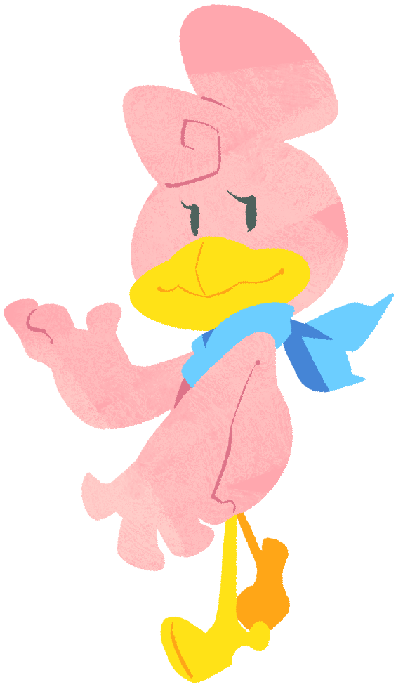

Maririn (Female)One of Kururin's sisters, and also the eldest daughter of the family. She cares about her beauty more than anything, even calling herself the "Village Idol." She loves to go shopping and is always thinking about it, even during serious situations. While Kururin is regarded at the eldest sibling, Kururin Paradise considers that she could possibly be older, given her looks. She has a bit of a narcissistic personality, but can be friendly. |
 |